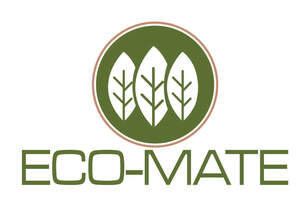

Trade Mark Journal No.2025/031 1 August 2025
UK00004235380 17 July 2025 (6,8,16,21,22,24,25)

- Class 6
- Aluminium foil; Aluminium foil for cooking purpose.
- Class 8
- Tableware [knives, forks and spoons]; Disposable tableware [cutlery] made of plastics.
- Class 16
- Paperboard trays for packaging food; Containers of paper for packaging; Paper take-out cartons for food; Paper bags; Paper shopping bags; Garbage bags of plastic; Carrier bags of paper or plastic; Cling film; Greaseproof paper; Parchment paper; Baking paper; Paper napkins; Cardboard cartons; Corrugated boxes; Cardboard pizza boxes; Toilet rolls; Kitchen rolls [paper]; Plastic bags for packaging; Till rolls; Paper towels; Toilet paper; Paper wipes; Wrapping paper.
- Class 21
- Paper cups; Paper plates; Plastic bottles; Plastic plates; Plastic cups; Pots; Foil food containers; Oven gloves; Rubber household gloves.
- Class 22
- Mail bags; Packaging bags made of textile.
- Class 24
- Kitchen towels [textile].
- Class 25
- Aprons [clothing]; Plastic aprons.
Shawn Packaging Limited